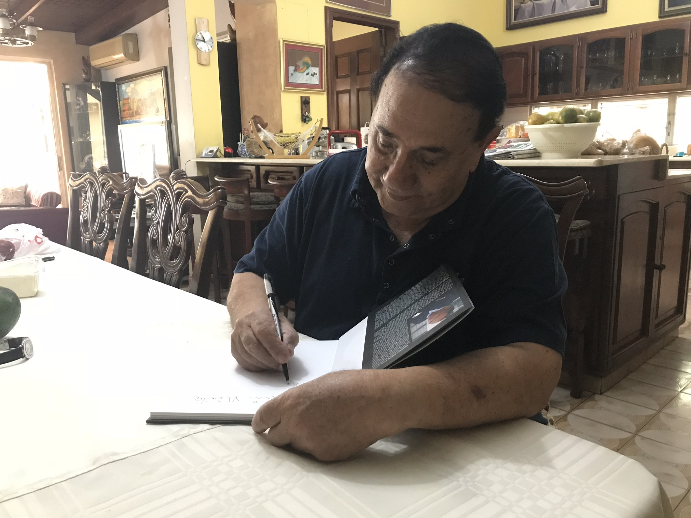

Vinicio's Gallery
Vinicio Hernandez was born in Santo Domingo, Dominican Republic on August 16, 1934. From a very young age he had to be creative in order to move forward. He started by selling avocadoes in his neighborhood, followed by _____. He graduated from a television workshop in New York where he later photographed various Dominican presidents; among them, he worked alongside Rafael Leonidas Trujillo, Joaquin Balaguer, and Juan Bosch. He also photographed politicians visiting the DR: Romulo Betancourt (Venezuela), Fulgencio Batista (Cuba), Adolfo Lopez Mateo (Mexico), Lyndon B. Johnson (USA).
He created a movie-filming company "Producciones Nuevo Mundo" where the first Dominican film was produced. He later created the Editora Tele-3, a printing company where he printed TV guides (1970), magazine Club de Rotarios (1978), and ____.
Throughout his career he has written three books: "La Imprenta, su evolucion ligada al desarrollo de los pueblos" (1962), "Republica China, ejemplo del desarrollo humano" (1995), and "El camarografo de Trujillo" (2017).
On his time of leisure, he does canvas painting. He bases his paintings on Dominican cultures, depicting countryside landscapes, portraits of daily living, and abstract of daily norms. If you visit him, you'll find him sketching ideas for future projects - you might even get a sneak peek.